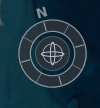
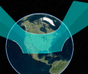
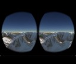

| Plugin | Description | Developer | |
|---|---|---|---|
|  |
Cesium Navigation |
A Cesium plugin that adds to the Cesium map a compass, navigator (zoom in/out), and distance scale |
Contact |
|  |
Cesium Sensors |
A Cesium plugin for visualizing sensor volumes. |

Analytical Graphics, Inc. |

|
Cesium GWT |
GWT wrappers around Cesium APIs (initial implementation, looking for more contributors). |

Harmonia Holdings Group, LLC |
|  |
CesiumVR |
Integrating Cesium with VR-enabled browsers. |
NICTA |

|
Groundpush |
Allows users to push the terrain up or down within a defined region. |
NICTA |

|
GeoserverTerrainProvider |
A terrain provider for use with GeoServer. |
Ministere de la Defense FRANCE |
|
|
DrawHelper |
Adds shape drawing and editing capability to Cesium. |
Geocento Ltd. |
|
|
Leap |
Adds navigation using the Leap Motion controller to Cesium. |
Aviture |

|
Materials Pack |
Procedurally-shaded materials such as bricks, wood, and noise patterns. |
Analytical Graphics, Inc. |

|
Starter App |
A simple JavaScript starter app for creating apps with Cesium. Just fork and start coding. |

Analytical Graphics, Inc. |

|
Assets |
Graphics assets, including imagery, stars, and textures, packaged for use with Cesium. |
Analytical Graphics, Inc. |